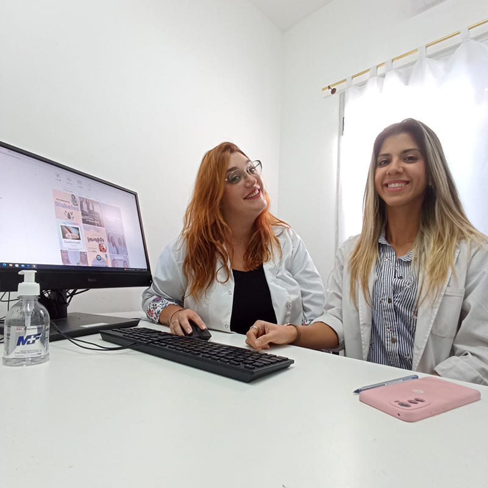

Médicas Generalistas ¿Sabés lo que significa?
Nuestra capacitación nos da herramientas para atender a las personas dentro de su ciclo vital, es decir atendemos embarazadas de bajo riesgo, neonatos, realizamos seguimiento del desarrollo de niños, adolescente, salud sexual y reproductiva de los adultos junto con su controles habituales, gerontología, enfermedades crónicas no transmisibles y un montón de consultas más.
Cómo generalistas somos el primer contacto de las personas con el sistema de salud y podemos resolver el 85% de las consultas médicas de las personas a lo largo de toda su vida! Por eso queremos presentarnos y compartir con ustedes el día a día. ¿Conocías lo que es un médico generalista o de familia?
Sabemos que no todos conocen esta especialidad, y nuestro desafío es que juntos vayamos descubriendo la importancia de una mirada integral sobre la salud. Vas a aprender a cuidarte y a cuidar a los que te rodean, a formar parte activa de tu salud para tomar decisiones, hacerte chequeos y adquirir hábitos con conocimiento actualizado y basado en la evidencia.